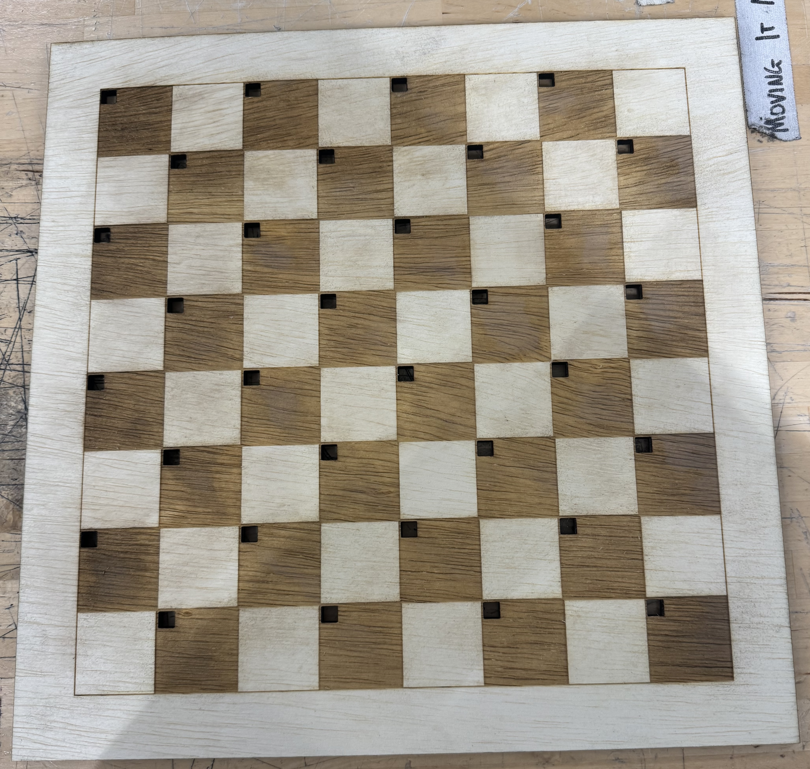
As part of my Digital Systems class I designed a 5-stage pipelined 32-bit CPU (in Verilog) with minor optimizations such as Wallace Tree multiplication, carry-lookahead addition, and bypassing. For our final project me and a classmate teamed up and challenged ourselves to try and integrate this CPU in a setup such that it could play a physical checkers game against a human player (all components including I/O integration and interfacing done from scratch in either MIPS assembly or Verilog).
Using verilog, design a pipelined, optimized CPU from scratch.
Design custom interfaces and libraries for I/O components (lights and hall effect sensors)
Write an algorithm based on a heuristic search to play checkers against a human player.
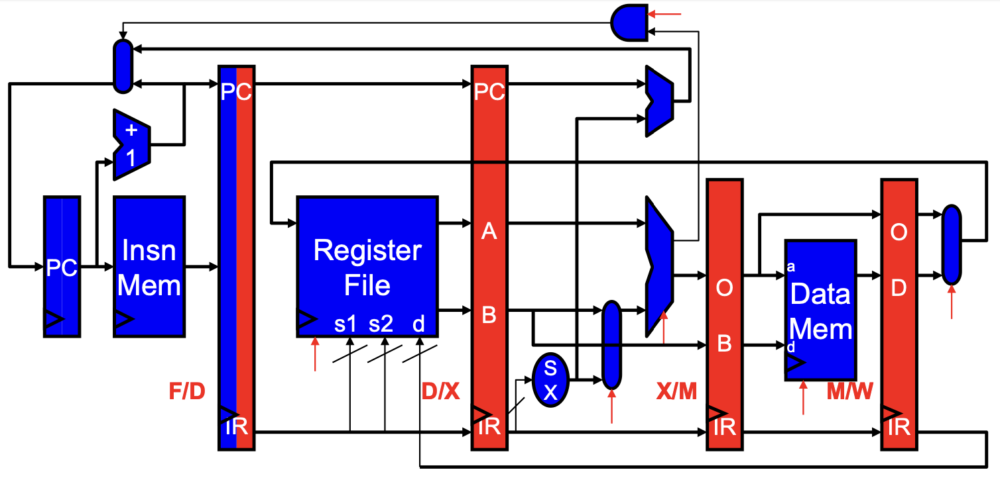
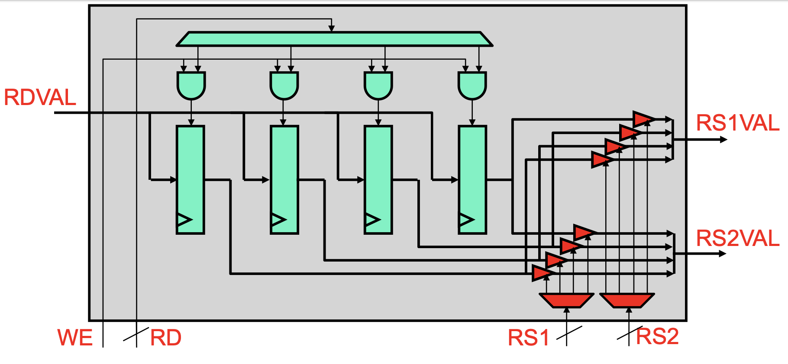
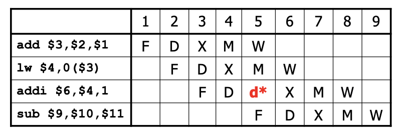
Over the course of my Digital Systems class, I designed a 5-stage pipelined processor. As seen in the diagrams, the stages are as follows: five stages: fetch (retrieves instruction and updates program counter), decode (extracts register data), execute (performs ALU operations and handles branching), memory (manages memory interactions), and writeback (updates registers with results). The CPU employs bypassing, which allows results from later stages to be directly passed to earlier stages where needed, avoiding unnecessary delays and dependencies. Additionally, the CPU implements stalling mechanisms that temporarily suspend execution when dealing with load-use hazards or mult/div operations.
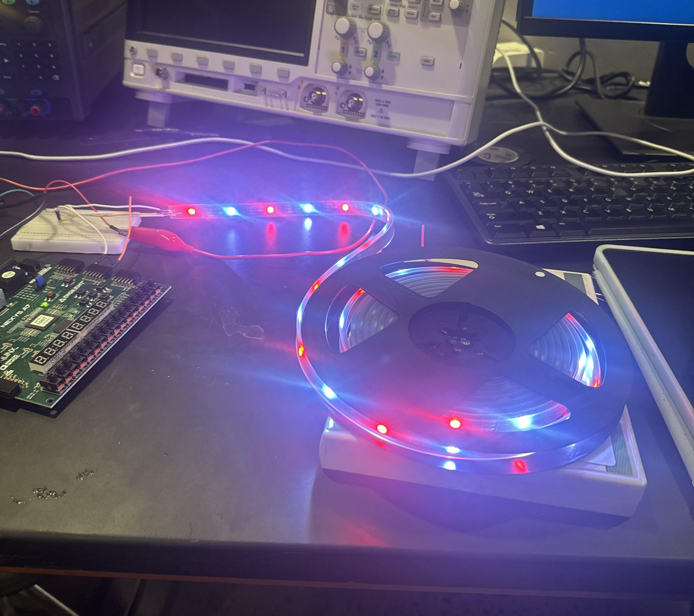
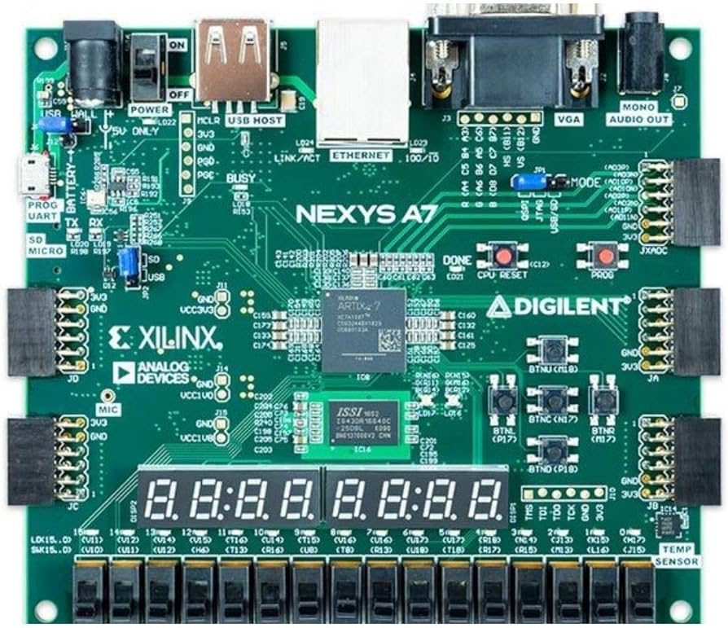
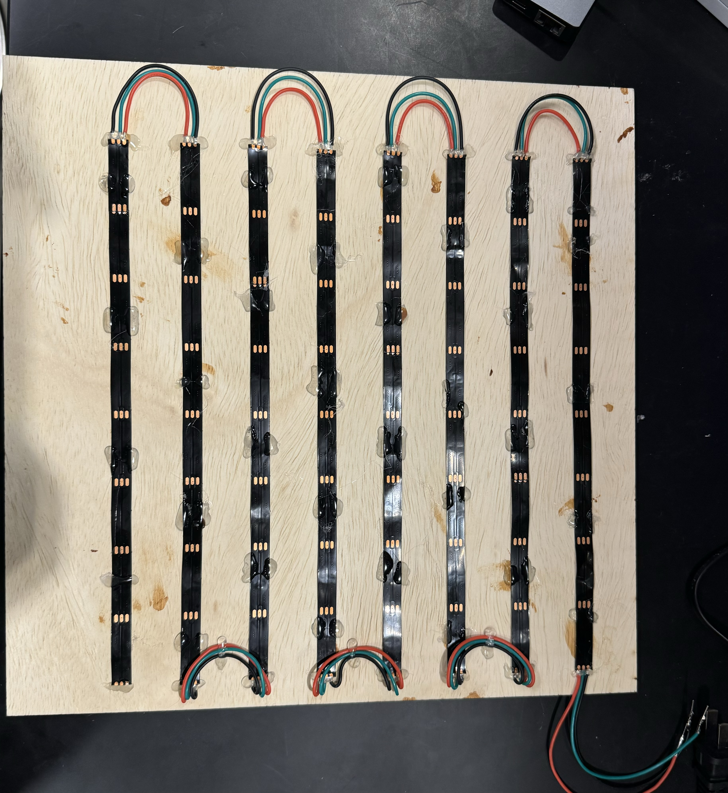
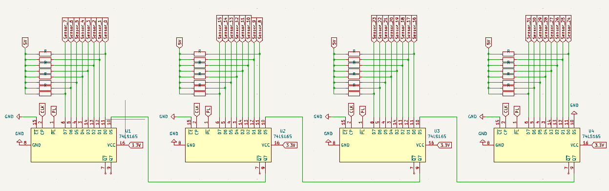
The I/O for our project included individually addressable lights to show player and CPU pieces and to indicate the CPU's move. Additionally, hall effect sensors were placed under all playable squares and fed into shift registers, resulting in a single input signal being used to read data from all 32 sensors. All code for the lights (WS2812 protocol PWM for individual addressing) and the sensors (custom library for reading from the shift registers) was done in Verilog and all I/O was memory mapped (tied to one of our 32-bit registers each).
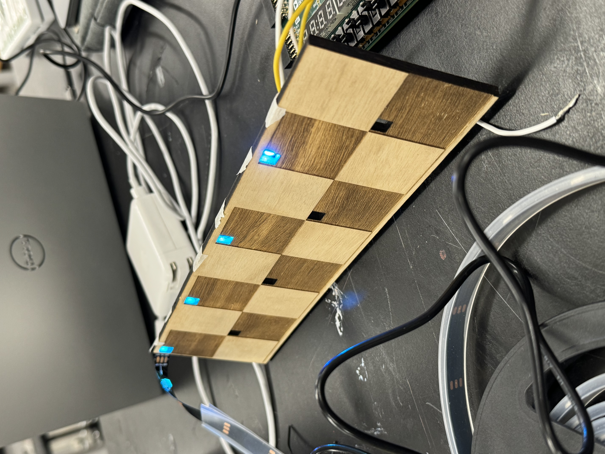
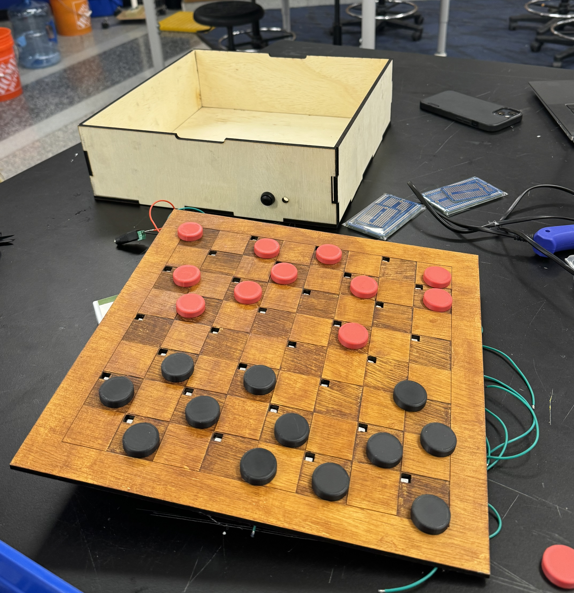
The physical design for the checkers board included a fully custom board and housing box that was lazer cut and wood stained and polished. The board was made keeping the spacing of lights and hall effect sensors in mind. The box included slots for a power source (to power the FPGA) and a button that is pressed to indicate the player's turn being finished.
Full project demo showing the checkers algorithm at work (a relatively simple heuristic search). Overall, the project exceeded all expectations, not only performing very well (especially considering all elements were done from scratch, and all code elements were in low level Verilog or MIPS assembly), but also looking visually clean and professional.
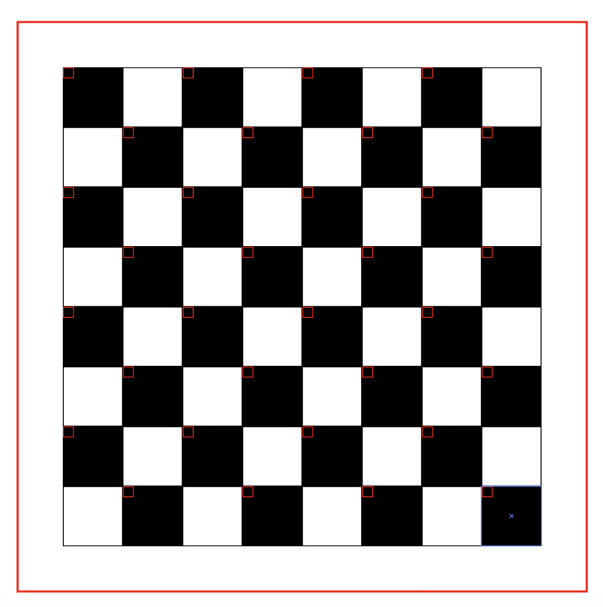
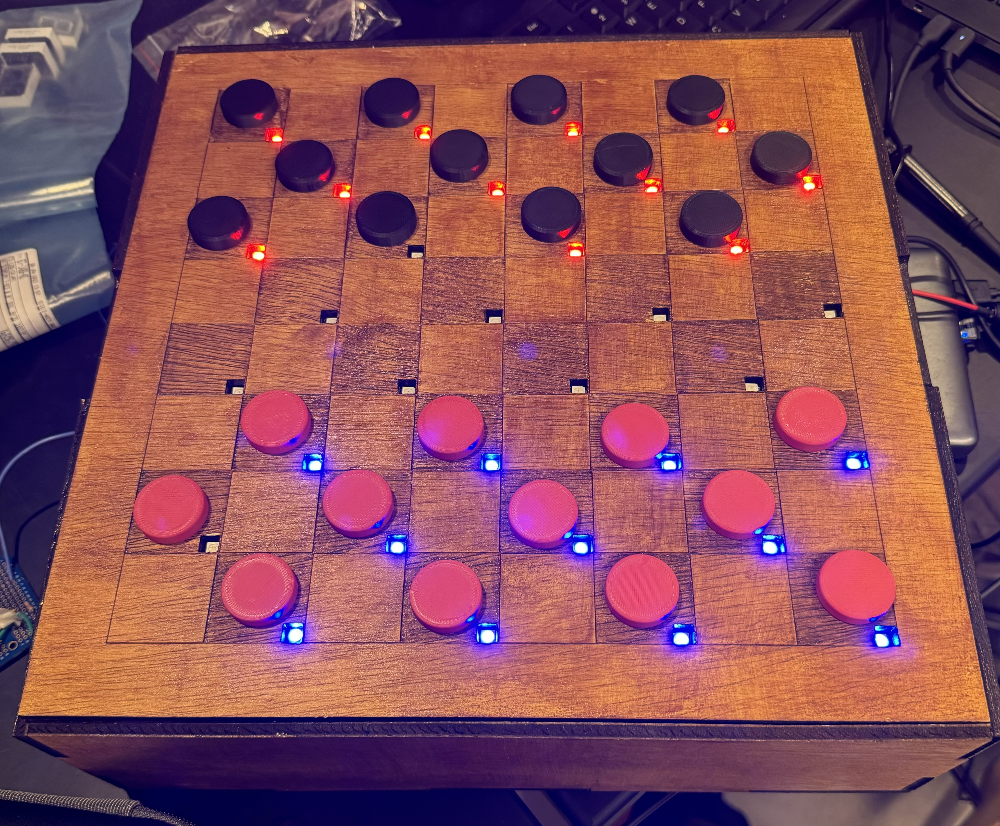
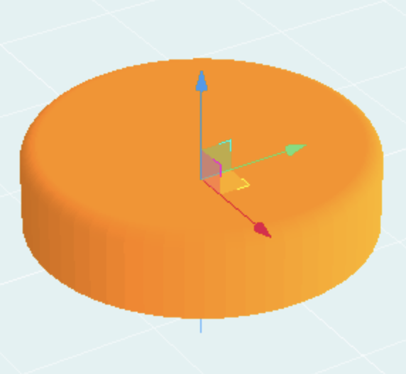
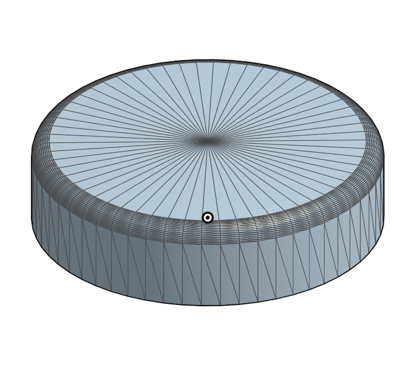
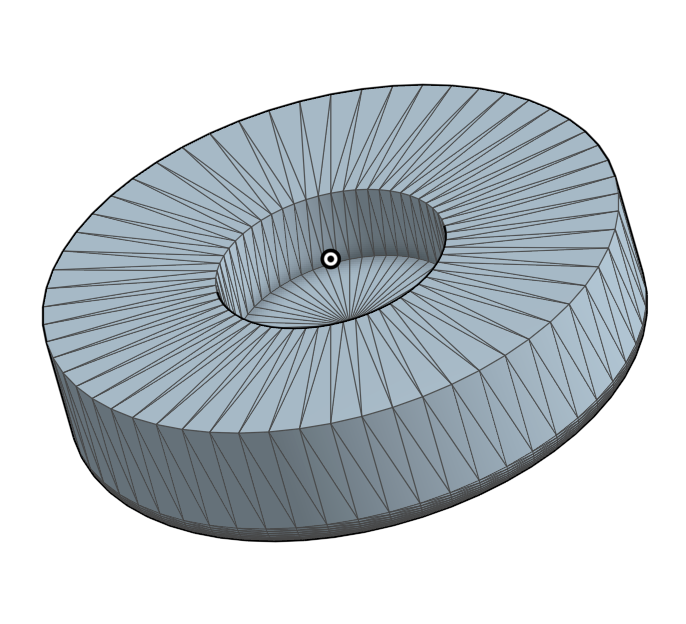
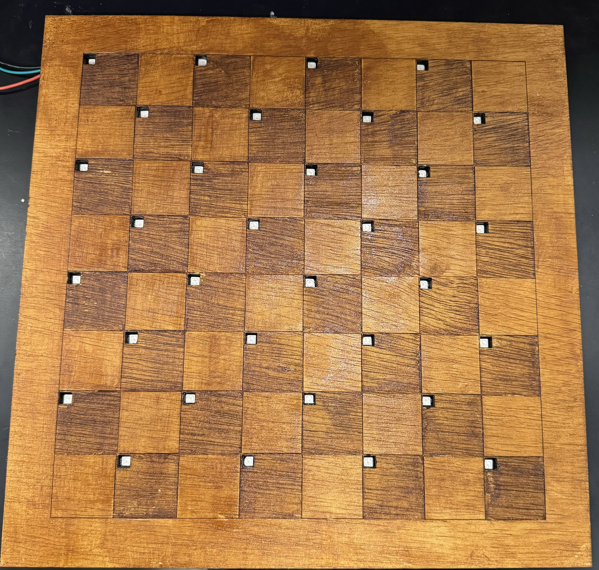